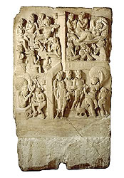

Birth of Siddhartha Gautama
In about 563 B.C. a prince was born in a kingdom in eastern Nepal. He lived a life of privilege and wealth until he was a young adult. After he came into contact with the pain and suffering of the world he gave up his life of luxury. After trying many forms of religious activity, he still had not found peace and understanding of life. He decided that he would search for answers within himself through meditation. After meditating for many days, he reached Enlightenment. After this, he was known as the Buddha. He devoted the rest of his life to teaching others. |